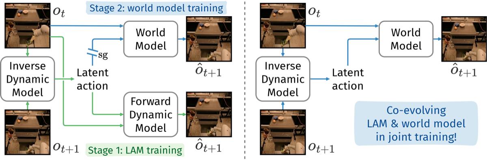

Why it matters왜 중요한가
A frozen action vocabulary becomes the ceiling of the world model — so don't freeze it.
동결된 행동 어휘가 곧 월드모델의 천장이 된다 — 그러니 동결하지 마라.
Video diffusion models hold rich physics priors, but to drive them you need actions — and action spaces differ wildly across robots, games and humans. Latent actions, inferred from video itself, give a universal control interface. The standard recipe trains a LAM (an inverse + forward dynamics model) on action-free video, freezes the inverse model to label latent actions, then trains a bigger world model on those labels. This wastes effort (both models predict the next frame) and locks the action space in place before the world model is even good. CoLA-World reframes the problem: let the powerful world model itself act as the forward dynamics model, so its gradients flow back and keep refining the actions as it learns. The world model becomes a tutor for the actions; the sharper actions become a better control interface — a virtuous cycle.
비디오 확산 모델은 풍부한 물리 사전지식을 갖지만, 이를 구동하려면 행동이 필요하다 — 그리고 행동 공간은 로봇·게임·사람마다 천차만별이다. 비디오 자체에서 추론한 잠재 행동은 보편적 제어 인터페이스를 준다. 표준 방식은 행동 없는 비디오로 LAM(역+순 동역학 모델)을 학습하고, 역모델을 동결해 잠재 행동을 라벨링한 뒤, 그 라벨로 더 큰 월드모델을 학습한다. 이는 노력이 중복되고(둘 다 다음 프레임을 예측), 월드모델이 좋아지기도 전에 행동 공간을 고정해버린다. CoLA-World는 문제를 재정의한다: 강력한 월드모델 자체를 순방향 동역학 모델로 쓰면, 그 그래디언트가 되돌아 흘러 학습이 진행될수록 행동을 계속 정련한다. 월드모델은 행동의 튜터가 되고, 날카로워진 행동은 더 나은 제어 인터페이스가 된다 — 선순환.

sg and the redundant forward dynamics model). Right — CoLA-World drops the forward dynamics model and co-evolves the LAM and world model in one joint training run.sg와 중복되는 순방향 동역학 모델 주목). 오른쪽 — CoLA-World는 순방향 동역학 모델을 없애고 LAM과 월드모델을 한 번의 공동 학습에서 공진화시킨다.By the numbers핵심 숫자
(vs 7.7% two-stage, 12.2% AdaWorld)시각적 계획 성공률
(2-stage 7.7%, AdaWorld 12.2% 대비)
vs 167.77 two-stageLIBERO FVD ↓ (분포 밖)
2-stage 167.77 대비
codebook collapse코드북 붕괴를 막는
warm-up 스텝 수
vs 188.82 two-stage실제 행동 FVD ↓
2-stage 188.82 대비
(OpenSora v1.2 backbone)월드모델 파라미터
(OpenSora v1.2 백본)
(2 tokens × 32-entry codebook)잠재 행동 수
(2 토큰 × 32-엔트리 코드북)
Results — joint training beats two-stage at equal budget결과 — 동일 예산에서 공동학습이 2-stage를 이긴다
| Metric지표 | CoLA-World | 2-stage | Δ |
|---|---|---|---|
| LIBERO FVD ↓ (OOD) | 158.36 | 167.77 | −9.41 |
| AgiBot FVD ↓ | 174.93 | 185.63 | −10.70 |
| OXE FVD ↓ | 278.90 | 291.30 | −12.40 |
| EgoCentric FVD ↓ | 252.45 | 260.14 | −7.69 |
| Real-action FVD ↓ (LIBERO) | 169.70 | 188.82 | −19.12 |
| VP² planning success ↑ | 21.20% | 7.73% | +13.47 |
In one diagram한 장의 그림
Idea: one model, two roles, co-evolving아이디어: 한 모델이 두 역할, 공진화
World model IS the dynamics predictor
Drop the LAM's separate forward dynamics model entirely. Latent actions from the inverse dynamics model (12-layer ST-Transformer, VQ to 1024 codes) condition the pretrained OpenSora backbone via zero-initialized AdaLN action attention. The flow-matching denoising loss now backpropagates straight through the actions — no stop-gradient.
LAM의 별도 순방향 동역학 모델을 완전히 제거. 역동역학 모델(12층 ST-Transformer, VQ로 1024 코드)이 만든 잠재 행동이 영-초기화된 AdaLN 행동 어텐션을 통해 사전학습 OpenSora 백본을 조건화한다. flow-matching 디노이징 손실이 stop-gradient 없이 행동으로 곧장 역전파된다.
Warm-up before the cycle
Naive joint training collapses the VQ codebook (utilization → 0, one code dominates) because a random action model can't keep pace with a pretrained world model. Fix: freeze the world model and train only the action/conditioning modules for 8K steps, aligning representations — then unfreeze and co-train. Codebook entropy stays healthy throughout.
순진한 공동학습은 VQ 코드북을 붕괴시킨다(이용률 → 0, 한 코드 독점) — 랜덤 행동모델이 사전학습 월드모델을 따라가지 못하기 때문. 해결: 월드모델을 동결하고 행동/조건화 모듈만 8K 스텝 학습해 표현을 정렬 — 이후 동결 해제 후 공동학습. 코드북 엔트로피가 끝까지 건강하게 유지된다.
How it works어떻게 작동하나
- Infer latent action잠재 행동 추론The inverse dynamics model reads a frame pair (oₜ, oₜ₊₁) and predicts a latent action, vector-quantized into 2 tokens from a 32-entry codebook (1024 choices) to force compact, meaningful encodings.역동역학 모델이 프레임 쌍(oₜ, oₜ₊₁)을 읽어 잠재 행동을 예측하고, 32-엔트리 코드북에서 2개 토큰(1024 선택지)으로 벡터 양자화 — 간결하고 의미 있는 인코딩을 강제.
- Warm-up (world model frozen)warm-up (월드모델 동결)For 8K steps, backprop the flow-matching loss only through the action and conditioning modules so the from-scratch LAM aligns with the frozen, powerful OpenSora world model — preventing the codebook collapse seen in naive joint training.8K 스텝 동안 flow-matching 손실을 행동·조건화 모듈로만 역전파해, 처음부터 학습하는 LAM이 동결된 강력한 OpenSora 월드모델에 정렬되게 한다 — 순진한 공동학습의 코드북 붕괴를 방지.
- Joint co-evolution공동 공진화Unfreeze everything (inverse model, VQ, conditioning, OpenSora). Gradients now flow both ways: the improving world model gives richer signal to the LAM, and the sharper LAM gives the world model a more precise control interface.전부(역모델, VQ, 조건화, OpenSora) 동결 해제. 그래디언트가 양방향으로 흐른다: 개선되는 월드모델이 LAM에 더 풍부한 신호를 주고, 날카로워진 LAM이 월드모델에 더 정밀한 제어 인터페이스를 준다.
- Adapt to real actions, then plan실제 행동에 적응 후 계획A small adapter maps real robot actions into the latent space; CoLA-World's robust codebook resists collapse here where the two-stage method does not. Then run sampling-based MPC for visual planning on RoboDesk VP².작은 어댑터가 실제 로봇 행동을 잠재 공간으로 매핑 — CoLA-World의 견고한 코드북은 2-stage가 붕괴하는 이 상황에서도 버틴다. 이후 RoboDesk VP²에서 샘플링 기반 MPC로 시각적 계획 수행.
What to take away그래서, 가져갈 것
First successful joint LAM + pretrained-video-WM training. Killing the two-stage split removes redundant next-frame prediction and the frozen-action bottleneck, all at equal or smaller compute budget.
LAM과 사전학습 비디오 월드모델의 첫 성공적 공동학습. 2-stage 분리를 없애 중복된 다음 프레임 예측과 고정 행동 병목을 제거 — 동일하거나 더 적은 연산 예산으로.
Stability is the real contribution. The conceptual idea (use the WM as the FDM) failed before because of collapse; the 8K warm-up is the small, decisive trick that makes co-evolution work at all.
안정화가 진짜 기여. 개념(WM을 FDM으로 쓰기)은 붕괴 때문에 과거에 실패했다 — 8K warm-up이 공진화를 비로소 가능케 하는 작지만 결정적인 트릭.
Co-evolution pays off downstream. Nearly 3× planning success and a robust codebook under real-action adaptation — the jointly learned actions transfer better than frozen ones.
공진화는 다운스트림에서 보상받는다. 계획 성공률 약 3배, 실제 행동 적응에서도 견고한 코드북 — 공동학습된 행동이 동결된 행동보다 잘 전이된다.
Backbone-agnostic. The paradigm holds when swapping OpenSora for Wan2.1 and improves with bigger world models and more data — promising signs for scaling.
백본 비의존적. OpenSora를 Wan2.1로 바꿔도 패러다임이 유지되고, 더 큰 월드모델·더 많은 데이터에서 개선 — 스케일링 가능성의 청신호.